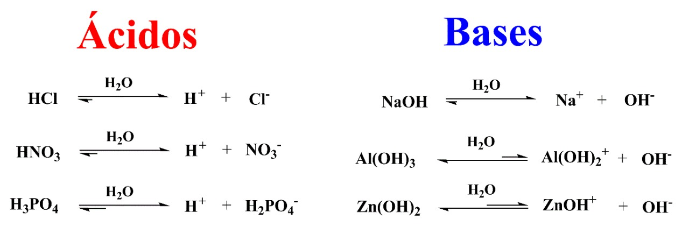

Quimica
Ácidos e Bases
Clasificação dos acidos
Quanto ao n² de hidrogênio
Monoacido apresenta 1H
Diacido apresenta 2H
Triacido apresenta 3H
Tetracido apresenta 4H
Quanta a presença de oxigênio
Hidracidos- não possuem oxigênio
Oxiácidos- possuem oxigênio
Quanto a força?
Entre os hidrácidos
oque são fortes são Hcl,Hbr,Hl
os Moderado são HF
os fracos são os demais(resto)
Entre os Oxiácidos faz-se a diferença entre o n² de oxigênio menoreso n² de hidrogênio(O-H) se a diferença der:
3 ou + --> Muito Forte
2 -->Forte
1 -->Moderado
0 --> Fraco
Nomenclatura dos ácidos
Utilizamos a tabela principais
Ex:HmnO4=acidos Permangânico
H2Co3 acidos carbônico
Clasificação Das Bases
Quanto ao n² Hidroxilas
Monobase-possui 10H
Dibase-possui 20H
Tribase-prossui 30H
Tetrabase-possui 40H
Quanto a solubilidade?
Solúves -> da familha 1A e NH4OH
Pouco Solúves -> Bases da familha 2A
Insolúves ->Demais
Quanto a força
Bases Fortes-> 1A e 2A
Base fraca->Demais
Nomenclatura das bases
Bases fixas -> Hidroxido de .......... (nome do cation/elemento)
Bases Variáveis -> Hidróxido de .......... (nome do cation/elemento)
Ou ->Hidróxido .......... (nome do cation/elemento)Ico(meio carga), Oro(menor carga)
Para saber mais sobre clique na imagem:
